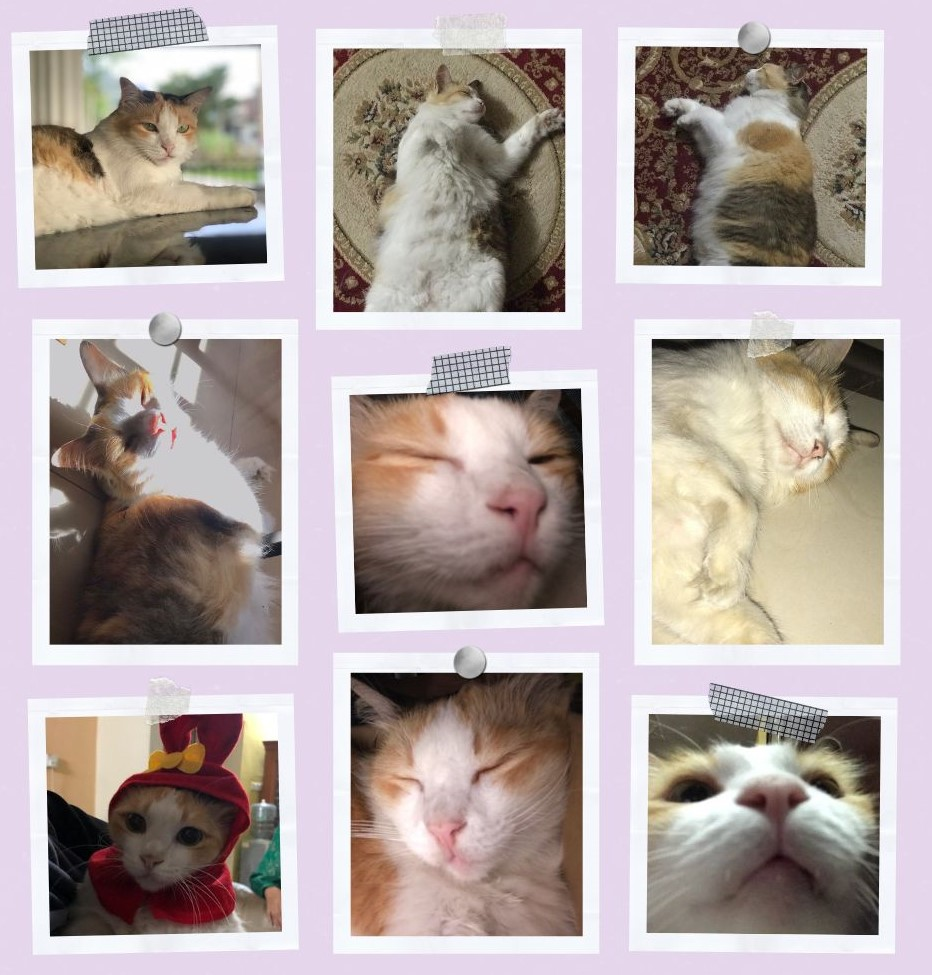
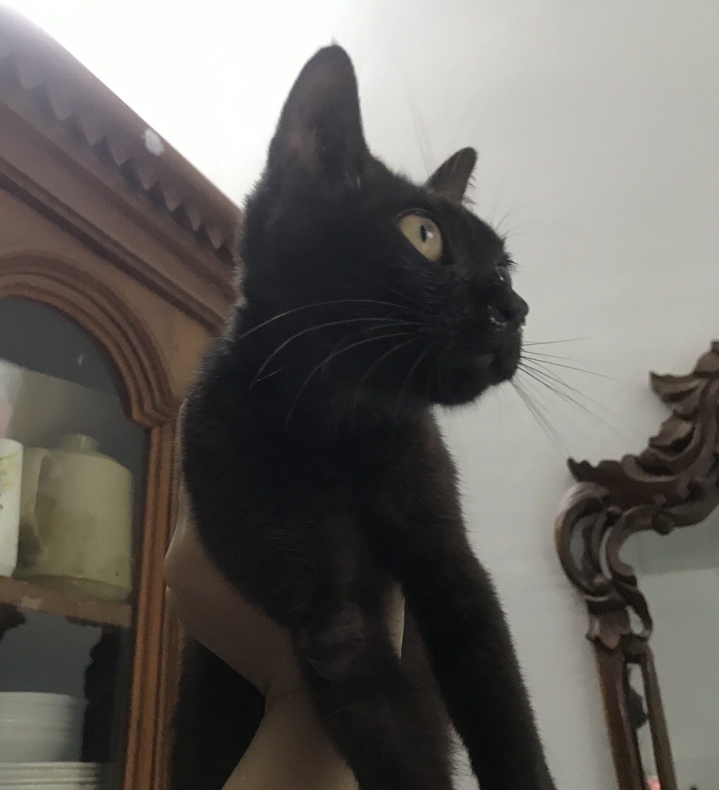
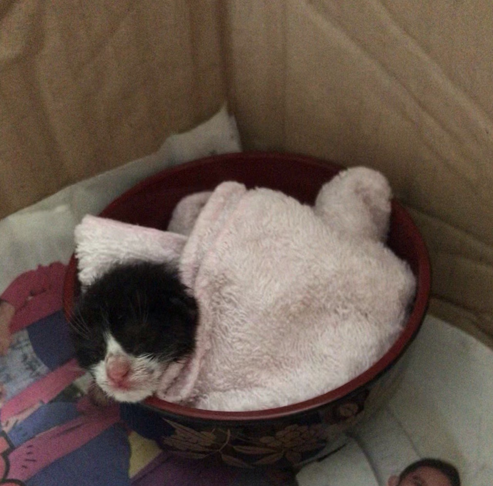

ALIA SOFEA ♔
ABOUT DEBAB
𙚠She is a calico but most of the time she acts like an orange cat
𙚠Her birthday is on 8th December
𙚠She has her own daily routine where she would eat - sleep - watching birds - counting cars - eat - sleep
𙚠She is a spoiled cat, her drink needs to be change everytime she wants it and she does not share her bowl with any cat
ADDITIONAL INFORMATION

𙚠This is Kuro (kuro means black in japanese)
𙚠Kuro is a stray cat that lives at my house
𙚠She is a playful kitten
𙚠She likes to eat from debab's bowl and cling on people's feet
𙚠She has no single stray of white hair, she is completely black from head to toe
𙚠Kuro is a stray cat that lives at my house
𙚠She is a playful kitten
𙚠She likes to eat from debab's bowl and cling on people's feet
𙚠She has no single stray of white hair, she is completely black from head to toe

𙚠This is a new kitten left by a cat at my house
𙚠We took it in because it was left alone by it's mother under a tree
𙚠It does not have a name yet because we do not know if it is a male cat or female cat
𙚠This kitten drinks milk very often and a lot in a day so i think it is going to be a fat cat when it grows up
𙚠We took it in because it was left alone by it's mother under a tree
𙚠It does not have a name yet because we do not know if it is a male cat or female cat
𙚠This kitten drinks milk very often and a lot in a day so i think it is going to be a fat cat when it grows up